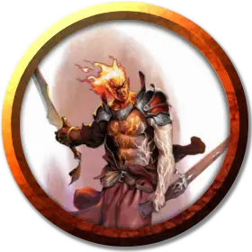

Бастиан Термандар
Bastian Thermandar
Средний Гуманоид (Огненный дженази), нейтрально-злой, именной НИП

Класс Доспеха 12 (15 с доспехами мага)
Хиты 78 (12к8 + 24)
Скорость 30 футов
| мод | спас | ||
|---|---|---|---|
| СИЛ | 12 | +1 | +1 |
| ЛОВ | 14 | +2 | +2 |
| ТЕЛ | 15 | +2 | +2 |
| мод | спас | ||
|---|---|---|---|
| ИНТ | 11 | +0 | +0 |
| МДР | 9 | −1 | −1 |
| ХАР | 18 | +4 | +4 |
Навыки Магия +3, Обман +7
Сопротивление урону огонь
Чувства тёмное зрение 60 футов, пассивное Восприятие 9
Языки Общий, Игнан
Опасность 8 (3900 опыта)
Бонус мастерства +3
Особенности
Врождённое колдовство. Базовой характеристикой Бастиана является Телосложение (Сл спасброска от заклинаний 13, +5 к попаданию атаками заклинаниями). От природы он владеет следующими заклинаниями:
• Неограниченно:сотворение пламени [produce flame]
• 1/день:огненные ладони [burning hands]
Использование заклинаний. Бастиан является заклинателем 9-го уровня. Его базовой характеристикой является Харизма (Сл спасброска от заклинаний 15, +7 к атакам заклинаниями). Бастиан знает следующие заклинания чародея:
• Заговоры (неограниченно):огненный снаряд[fire bolt], волшебная рука [mage hand], сообщение [message], фокусы [prestidigitation], электрошок [shocking grasp]
• 1 уровень (4 ячейки):доспехи мага[mage armor], волшебная стрела [magic missile], щит [shield]
• 2 уровень (3 ячейки):туманный шаг[misty step], палящий луч [scorching ray]
• 3 уровень (3 ячейки):контрзаклинание[counterspell], огненный шар [fireball]
• 4 уровень (3 ячейка):переносящая дверь [dimension door], огненная стена [wall of fire]
• 5 уровень (1 ячейка):удержание чудовища[hold monster]
Действия
Кинжал. Рукопашная или дальнобойная атака оружием: +5 к попаданию, досягаемость 5 фт. или дистанция 20/60 фт., одна цель. Попадание: колющий урон 4 (1к4 + 2).
Описание
Подобно многим в культе огня, Бастиан горит внутренним огнём, но его пламя питает скорее честолюбие, а не желание увидеть выжженный дочиста мир. Бастиан замышляет свергнуть Вейнифер и присвоить Высекающий Искры себе.
Бастиан практикует тайные искусства, причем многое о своей магии огня он узнал от самой Вейнифер. В бою он полагается на свои заклинания: его прозвали «быстрый ожог», так как обычно он пытается нанести максимальный урон в начале схватки. Если Бастиан знает, что грядёт бой, но не может нанести упреждающий удар, он становится более осторожным, вызывая стену огня, чтобы защитить себя, прежде чем использовать другие боевые заклинания.